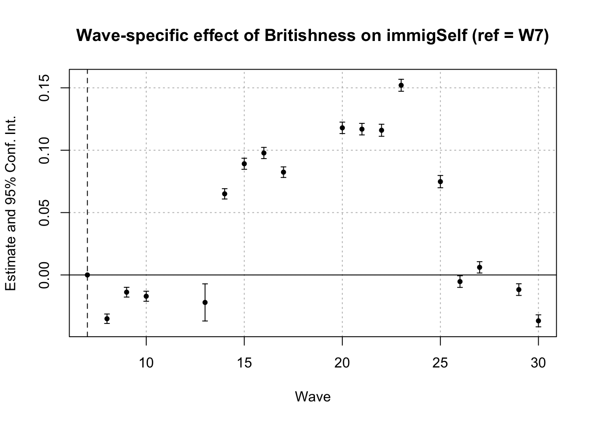

OLS estimation, Dep. Var.: immigEcon
Observations: 517,299
Fixed-effects: id: 82,988
Standard-errors: Clustered (id)
Estimate Std. Error t value Pr(>|t|)
britishness 0.414713 0.931632 0.445147 6.5621e-01
year 0.018996 0.002648 7.174667 7.3087e-13 ***
britishness:year -0.000217 0.000461 -0.469706 6.3857e-01
---
Signif. codes: 0 '***' 0.001 '**' 0.01 '*' 0.05 '.' 0.1 ' ' 1
RMSE: 0.907486 Adj. R2: 0.718912
Within R2: 0.003254Appendix: Temporal Stability of the Nationalism–ATI Relationship
This appendix aims to verify whether the relationship between national identity and attitudes toward immigration (ATI) is temporally stable, before introducing economic moderators. Specifically, we examine whether ATI varies over time as a function of national identity, as formalised by an interaction between Britishness and time.
The analytical strategy proceeds in three steps. First, I estimate respondent fixed-effects models interacting Britishness with calendar time to test for monotonic temporal drift in the nationalism–ATI relationship. Second, I estimate more flexible specifications that allow the effect of Britishness to vary freely across survey waves, capturing non-linear or big events changes. Third, identical temporal-stability checks across alternative ATI measures as a robustness exercise, while treating immigration self-placement (immigSelf) as the primary outcome given its substantially broader temporal coverage and superior suitability for longitudinal analysis.
All models are estimated using the feols() function from the fixest package. This estimator implements linear fixed-effects models using the within transformation, efficiently absorbing respondent-specific fixed effects without explicitly including thousands of dummy variables. Respondent fixed effects ensure that identification relies exclusively on within-individual variation over time, netting out all time-invariant characteristics such as baseline ideology, demographics, or long-run identity traits. Standard errors are clustered at the respondent level, allowing for arbitrary heteroskedasticity and serial correlation within individuals over time. This estimation strategy is well established in applied panel-data research and is particularly appropriate for assessing temporal stability in longitudinal survey data.
1. Economic ATI: Britishness × time
This model estimates the within-respondent relationship between national identity and economic attitudes toward immigration using a respondent fixed-effects specification with clustered standard errors. The inclusion of individual fixed effects ensures that identification relies exclusively on within-person change over time, netting out all time-invariant characteristics. The model is estimated on a large panel of 82,988 respondents. While the overall fit is high due to the absorption of stable individual differences (adjusted R² = 0.72), the within-respondent explanatory power of the model is very limited (within R² = 0.003). This indicates that temporal variation explains only a small share of changes in economic ATI within individuals. Importantly, this pattern is consistent with the interpretation that the association between Britishness and economic immigration attitudes is broadly stable over time, rather than driven by secular temporal drift, motivating the analysis of contextual moderators in subsequent models.
2. Economic ATI: Britishness × wave (flexible)
OLS estimation, Dep. Var.: immigEcon
Observations: 517,299
Fixed-effects: id: 82,988
Standard-errors: Clustered (id)
Estimate Std. Error t value Pr(>|t|)
wave::1:britishness -0.105789 0.002410 -43.889392 < 2.2e-16 ***
wave::2:britishness -0.101630 0.002358 -43.091932 < 2.2e-16 ***
wave::3:britishness -0.128669 0.002385 -53.952634 < 2.2e-16 ***
wave::4:britishness -0.070193 0.002280 -30.788347 < 2.2e-16 ***
wave::7:britishness -0.077187 0.002296 -33.623986 < 2.2e-16 ***
wave::8:britishness -0.069792 0.002291 -30.461878 < 2.2e-16 ***
wave::10:britishness 0.002283 0.002330 0.979749 3.2721e-01
wave::13:britishness 0.028667 0.005656 5.068784 4.0122e-07 ***
wave::14:britishness 0.041641 0.002252 18.492504 < 2.2e-16 ***
wave::15:britishness 0.075930 0.002329 32.606826 < 2.2e-16 ***
wave::16:britishness 0.062094 0.002304 26.946781 < 2.2e-16 ***
wave::17:britishness 0.063849 0.002216 28.812639 < 2.2e-16 ***
wave::20:britishness 0.083913 0.002357 35.594567 < 2.2e-16 ***
wave::21:britishness 0.024873 0.002356 10.555986 < 2.2e-16 ***
wave::22:britishness 0.006333 0.002394 2.645480 8.1590e-03 **
wave::23:britishness 0.008725 0.002364 3.690630 2.2384e-04 ***
wave::25:britishness -0.021285 0.002451 -8.684279 < 2.2e-16 ***
wave::26:britishness -0.062704 0.002408 -26.034961 < 2.2e-16 ***
wave::27:britishness -0.043117 0.002352 -18.335090 < 2.2e-16 ***
wave::30:britishness -0.102076 0.002454 -41.588506 < 2.2e-16 ***
---
Signif. codes: 0 '***' 0.001 '**' 0.01 '*' 0.05 '.' 0.1 ' ' 1
RMSE: 0.851067 Adj. R2: 0.752767
Within R2: 0.123338This specification allows the effect of Britishness on economic attitudes toward immigration to vary flexibly across survey waves by interacting national identity with wave indicators, while retaining respondent fixed effects and clustering standard errors at the individual level. Compared to the linear time-interaction model, this more flexible specification explains substantially more within-respondent variation (within R² = 0.12), indicating meaningful heterogeneity in the strength of the nationalism–economic ATI relationship across political periods. Importantly, these wave-specific effects do not exhibit a monotonic trend over time; instead, they fluctuate across waves, suggesting episodic strengthening and weakening of the association rather than secular drift. This pattern reinforces the interpretation that temporal variation in economic ATI is context-dependent and motivates the introduction of economic conditions as moderators in subsequent analyses.
3. Cultural ATI: Britishness × time
OLS estimation, Dep. Var.: immigCultural
Observations: 355,926
Fixed-effects: id: 71,802
Standard-errors: Clustered (id)
Estimate Std. Error t value Pr(>|t|)
britishness -4.042724 1.291704 -3.12976 0.0017502 **
year 0.053305 0.003694 14.43181 < 2.2e-16 ***
britishness:year 0.001992 0.000640 3.11122 0.0018639 **
---
Signif. codes: 0 '***' 0.001 '**' 0.01 '*' 0.05 '.' 0.1 ' ' 1
RMSE: 0.895357 Adj. R2: 0.757368
Within R2: 0.022428This model examines the within-respondent relationship between national identity and cultural attitudes toward immigration using a respondent fixed-effects specification with clustered standard errors. The analysis is based on 71,802 respondents. As in the other specifications, individual fixed effects absorb stable personal characteristics, yielding a high adjusted R² (0.76). However, the within-respondent explanatory power remains modest (within R² = 0.022), indicating that calendar time and its interaction with Britishness account for only a limited share of changes in cultural ATI within individuals. This suggests that, while the nationalism–cultural ATI relationship may evolve gradually over time, it does not exhibit strong mechanical drift, reinforcing the interpretation that temporal variation is relatively constrained and likely shaped by contextual factors rather than by time itself.
4. Immigration preference: Britishness × time
OLS estimation, Dep. Var.: immigSelf
Observations: 453,078
Fixed-effects: id: 73,798
Standard-errors: Clustered (id)
Estimate Std. Error t value Pr(>|t|)
wave::8:britishness -0.035091 0.001936 -18.12662 < 2.2e-16 ***
wave::9:britishness -0.013820 0.002000 -6.90991 4.8886e-12 ***
wave::10:britishness -0.017057 0.002055 -8.30155 < 2.2e-16 ***
wave::13:britishness -0.022018 0.007591 -2.90062 3.7254e-03 **
wave::14:britishness 0.065027 0.002109 30.83568 < 2.2e-16 ***
wave::15:britishness 0.089138 0.002272 39.23715 < 2.2e-16 ***
wave::16:britishness 0.097761 0.002285 42.78054 < 2.2e-16 ***
wave::17:britishness 0.082403 0.002166 38.03948 < 2.2e-16 ***
wave::20:britishness 0.117936 0.002337 50.45401 < 2.2e-16 ***
wave::21:britishness 0.116882 0.002366 49.40097 < 2.2e-16 ***
wave::22:britishness 0.115988 0.002471 46.94418 < 2.2e-16 ***
wave::23:britishness 0.152057 0.002451 62.03101 < 2.2e-16 ***
wave::25:britishness 0.074813 0.002512 29.78003 < 2.2e-16 ***
wave::26:britishness -0.005314 0.002380 -2.23289 2.5560e-02 *
wave::27:britishness 0.006112 0.002319 2.63506 8.4141e-03 **
wave::29:britishness -0.011745 0.002384 -4.92587 8.4167e-07 ***
wave::30:britishness -0.036763 0.002449 -15.01093 < 2.2e-16 ***
---
Signif. codes: 0 '***' 0.001 '**' 0.01 '*' 0.05 '.' 0.1 ' ' 1
RMSE: 1.24678 Adj. R2: 0.777356
Within R2: 0.057164
Focusing on immigration self-placement (immigSelf), the outcome with the most extensive temporal coverage, the fixed-effects models indicate meaningful but non-monotonic variation in the relationship between national identity and immigration preferences over time. While the overall within-individual explanatory power of the model is small (within R² = 0.057), the wave-specific estimates reveal substantial heterogeneity in the strength of the Britishness effect across survey waves. As illustrated in the wave-interaction plot, the association between Britishness and restrictive immigration preferences intensifies in specific mid-period waves before attenuating in later waves, without exhibiting a persistent upward or downward trend. This pattern suggests episodic reinforcement rather than secular drift, consistent with the interpretation that changes in the nationalism–ATI relationship are driven by context-specific political or economic conditions rather than by time itself.